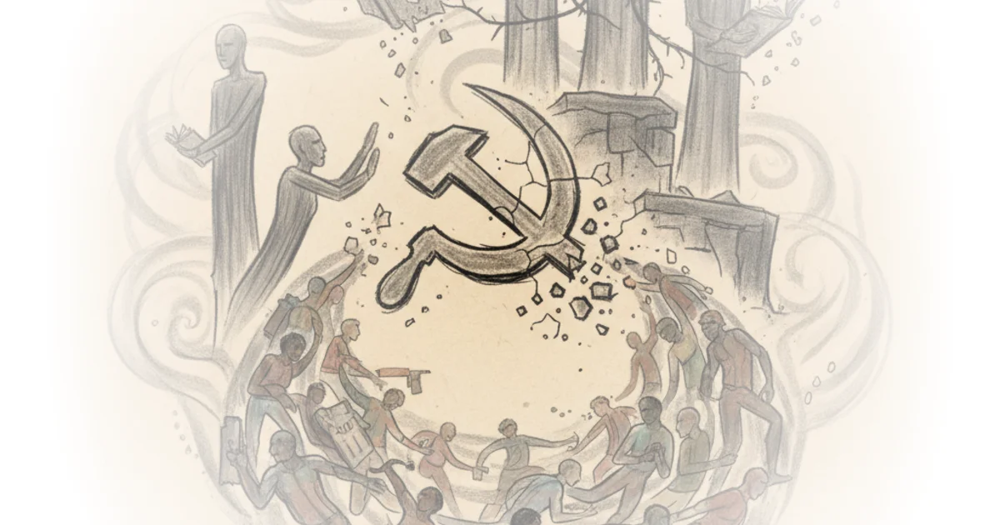

A surprising argument from sociologist Vivek Chibber: the left has lost its way by chasing identity politics instead of organizing workers. In this probing interview, Chibber draws on Marxist theory to explain why the working class—despite not being the most vulnerable—remains the only group with real power to challenge capital. He also traces how neoliberalism's legitimacy crisis has opened a door that the far right can't walk through, while the left remains stuck in its "pity party" approach.
The Gravediggers Have Not Gone Quietly
In 1848, Marx and Engels wrote that capitalism would create its own gravediggers—the very workers it exploits would be the ones to overthrow the system. For about fifty years after that prediction, Western Europe was rippling with revolutionary movements. Most failed. But in a broader sense, Chibber argues, the metaphor holds: workers are the only group with any leverage against capital because they are the ones who make profits possible. No one else.

This is why socialists have historically prioritized workers over the most marginalized. The unemployed and disabled may be morally deserving of support, but they lack the social power to actually challenge the system. Workers—roughly 60 to 70% of the labor force—have both the capacity to fight and an interest in doing so.
Chibber acknowledges that this sounds harsh. But he's not saying marginalized people don't matter. He's making a strategic argument: you become politically effective by riding with the people who are affected, which is the working class. That's why Marx called it the universal class—defending workers means defending everyone.
The Crisis of Neoliberalism
Chibber distinguishes between neoliberalism and capitalism itself. Neoliberalism—the specific economic model that has dominated since the 1980s—is in crisis. For forty years, people felt this was "the only game in town" and had to accept it. That feeling is gone.
What's replaced it is a sense of rage. People now feel the order is illegitimate—not just because of inequality, but because basic rights and services that any advanced country should provide have been denied for two generations while the wealthy celebrate their own enrichment. This creates what Chibber calls a crisis of legitimacy.
But here's the problem: this does not mean capitalism itself is under threat. There's nothing on the horizon to replace it. The far right—Trump, European equivalents—has gained the most from this crisis, but they have no viable economic model. Trump's tariffs are just wrinkles within neoliberalism, not an alternative to it.
The political crisis is deep. Both major parties in America found their support bases eroding. Oddly, the right benefited most. But even that solution is coming under doubt now.
The Left's Retreat
Chibber argues the left has ceded ground through what he calls a "pity approach"—advocacy and identity politics instead of organizing. University departments, media institutions, and nonprofit organizations have taken over the work of organizing workers. These groups are built around specific issues like race and gender that cannot be related to universal problems of exploitation.
The result is that working-class movements have been "hived off." People in universities and cultural institutions aren't ideologically committed to leftist politics—they just know advocacy. They can be brought over to class-based organizing if they see it offers them something concrete, like free childcare or transit.
But the harder problem is the people whose livelihoods depend on identity politics—academics, media professionals, activists with entire departments built around these issues. Those people won't budge because their jobs require the issue to remain central.
Chibber points to Bernie Sanders as the only threat to this order that corporate elites have tried to contain. Both parties worked to contain Sanders specifically—not because he was dangerous, but because his platform actually offered something structurally different from neoliberalism.
What Gives Hope
The old order is dying, but something new hasn't been born yet—that's where we are. But Chibber sees hope in one place: the social democratic left. The class-struggle left is the only political stream with any alternative to this crisis. Nothing is more important than achieving clarity and cohesiveness within this movement.
If this crisis drags on, politics will abhor a vacuum. If the right fills it, ordinary people will suffer. Something like a corporatist, state-led economic model could emerge—not quite fascism, but a significant step backwards for working people.
Critics might note that prioritizing workers risks marginalizing those who are most vulnerable—the disabled, the unemployed, the structurally excluded. Chibber acknowledges this tension directly in his book Confronting Capitalism: you can prioritize workers while still advocating for universal programs like healthcare and social insurance that benefit everyone, especially those without the social power that working people have.
The way you become effective politically is by riding with the people who are affected—which is the working class. That's why Marx called it the universal class.
Bottom Line
Chibber's strongest argument cuts against the grain of contemporary left politics: identity-based advocacy has replaced mass organizing, and it's hollowed out the left's ability to challenge capital. His vulnerability is strategic—he underestimates how difficult it is to shift people from advocacy to organizing when their livelihoods depend on keeping issues fragmented. The crisis of neoliberalism is real but incomplete; nothing viable has emerged to replace it. Watch for whether the social democratic left can achieve the cohesiveness Chibber says we need before the right fills the vacuum.